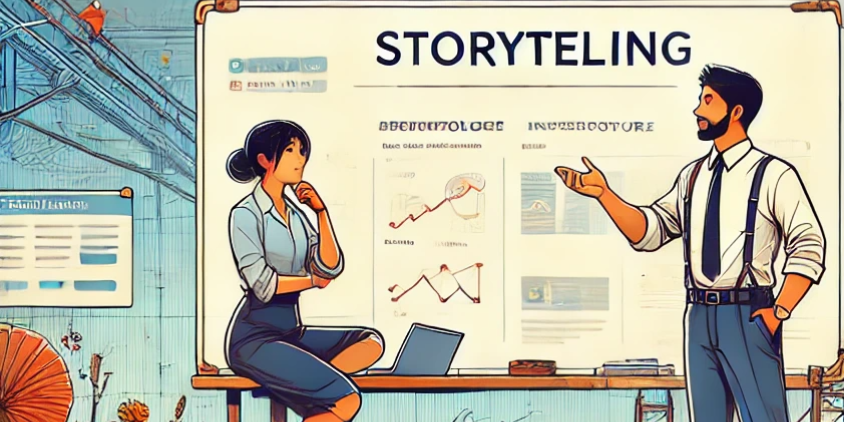

Storytelling in Tech

The power and impact of story telling gives me a high that most other things don't match up to. At work, we were talking about a large scale infra modernization project. This is about as tech-focused and dry as it could get. We were discussing how to present it to leadership.Challenge accepted.
- Infra architecture was working perfectly fine.
- Until one day, a capacity issue hit; and we had to go do some remediation to fix it.
- And then a few days later, more traffic, more issues. It was not our issue, but we were downstream, so we had to step in and help fix.
- And this started happening on a semi-frequent scale.
- Until one day, we just decided to overhaul some parts of the architecture (which was quite old).
- .. mini story .. A series of "How things are, now?" and "How it could become."
- Get LT approval
- We are in the middle of the overhaul and we track progress and report success incrementally
- And we should be back in peaceful infra architecture land.
It is a combination of Hero's journey, Pixar's framework, and Nancy Duartes technique.
So, thats how it's done folks. :-)
ps1: if you need help in story telling, want to learn this - topmate
ps2: if you want me to give a talk on this - DM me on twitter / linkedin.